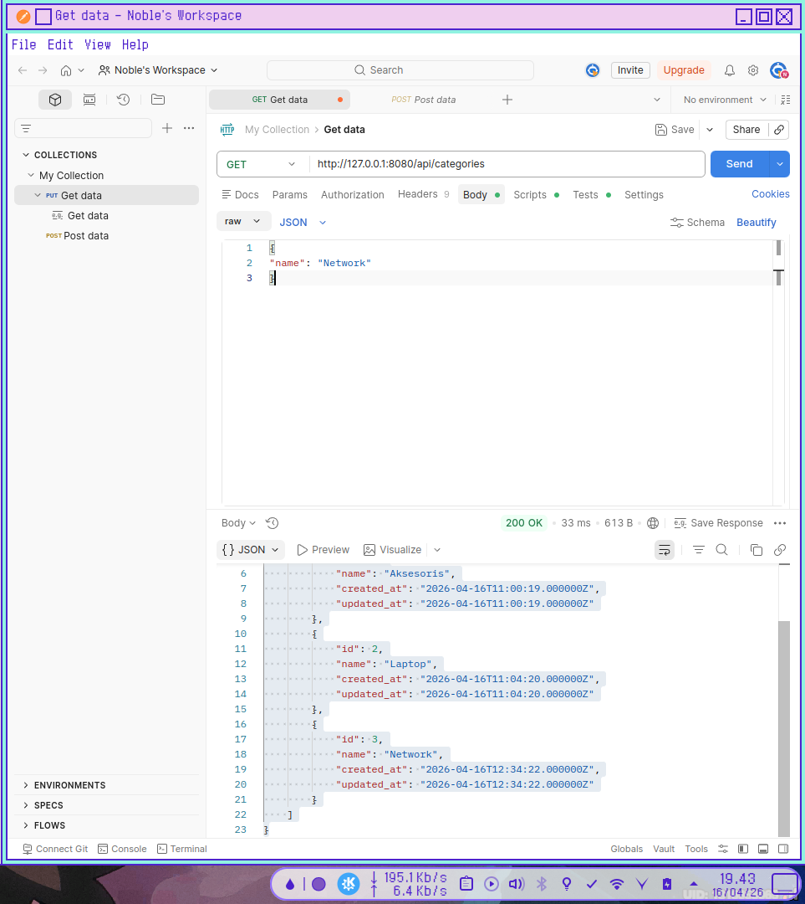
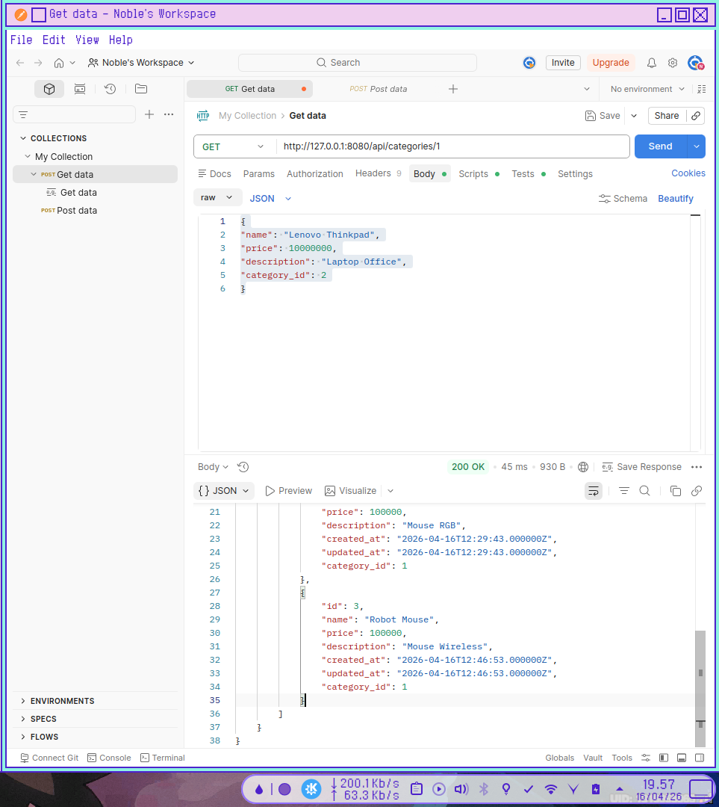

MODUL PRAKTIKUM PERTEMUAN 5
Implementasi Relasi Database pada REST API Laravel
Langkah Kerja Praktikum
1. Membuat Migration Tabel Categories
Jalankan perintah berikut pada terminal.
php artisan make:migration create_categories_table
2. Membuat Struktur Tabel categories
Buka file migration yang baru dibuat pada folder:
database/migrations
public function up(): void
{
Schema::create('categories', function (Blueprint $table) {
$table->id();
$table->string('name');
$table->timestamps();
});
}s
3. Menjalankan Migration
Jalankan perintah berikut untuk membuat tabel pada database.
php artisan migrate
Setelah berhasil maka tabel categories akan muncul di database.
4. Menambahkan Foreign Key pada Tabel Products
Buat migration baru.
php artisan make:migration add_category_id_to_products_table
public function up(): void
{
Schema::table('products', function (Blueprint $table) {
$table->foreignId('category_id')
->constrained()
->onDelete('cascade');
});
}
php artisan migrate
php artisan migrate
INFO Running migrations.
2026_04_16_084940_add_category_id_to_products_table ..... 43.22ms FAIL
Illuminate\Database\QueryException
SQLSTATE[23000]: Integrity constraint violation: 1452 Cannot add or update a child row: a foreign key constraint fails (`clientserver_db`.`#sql-alter-656-b`, CONSTRAINT `products_category_id_foreign` FOREIGN KEY (`category_id`) REFERENCES `categories` (`id`) ON DELETE CASCADE) (Connection: mysql, Host: 127.0.0.1, Port: 3306, Database: clientserver_db, SQL: alter table `products` add constraint `products_category_id_foreign` foreign key (`category_id`) references `categories` (`id`) on delete cascade)
at vendor/laravel/framework/src/Illuminate/Database/Connection.php:838
834▕ $exceptionType = $this->isUniqueConstraintError($e)
835▕ ? UniqueConstraintViolationException::class
836▕ : QueryException::class;
837▕
➜ 838▕ throw new $exceptionType(
839▕ $this->getNameWithReadWriteType(),
840▕ $query,
841▕ $this->prepareBindings($bindings),
842▕ $e,
+9 vendor frames
10 database/migrations/2026_04_16_084940_add_category_id_to_products_table.php:14
Illuminate\Support\Facades\Facade::__callStatic("table")
+26 vendor frames
37 artisan:16
Illuminate\Foundation\Application::handleCommand(Object(Symfony\Component\Console\Input\ArgvInput))
Dapat issue di sini karena data di products yang sudah ada karena praktikum sebelumnya tidak memiliki data untuk category_id jadi harus hapus semua data dulu.
Jalankan ini untuk hapus semua data dan lakukan semua dari awal:
php artisan migrate:fresh
5. Membuat Model Category
Jalankan perintah berikut.
php artisan make:model Category
app/Models
6. Menambahkan Relationship pada Model
Buka file Category.php :
class Category extends Model
{
public function products()
{
return $this->hasMany(Product::class);
}
}
Buka di flie Product.php:
class Product extends Model
{
use HasFactory;
protected $fillable = [
'name',
'price',
'description',
'category_id'
];
public function category()
{
return $this->belongsTo(Category::class);
}
}
7. Menampilkan Data Relasi pada API
Buka app/Http/Controllers/ProductController
Ubah method index() menjadi:
public function index()
{
$products = Product::with('category')->get();
return response()->json($products);
}
8. Menguji API Menggunakan Postman
- Menambahkan Data Category
Endpoint:POST /api/categories
Body JSON:
Jika Berhasil JSON akan menampilkan:{ "name": "Network" }{ "message": "Kategori berhasil ditambahkan!", "data": { "name": "Network", "updated_at": "2026-04-16T12:34:22.000000Z", "created_at": "2026-04-16T12:34:22.000000Z", "id": 3 } } - Menambahkan Data Produk dengan Category
Setelah kategori berhasil dibuat,selanjutnya tambahkan produk yang memiliki kategori.
Method:POST
URL: http://127.0.0.1:8080/api/products
Body JSON:
Jika berhasil maka JSON akan menampilkan :{ "name": "Crown Mouse", "price": 100000, "description": "Mouse RGB", "category_id": 1 }
{ "message": "Produk berhasil dibuat!", "data": { "name": "Crown Mouse", "price": 100000, "description": "Mouse RGB", "category_id": 1, "updated_at": "2026-04-16T12:29:43.000000Z", "created_at": "2026-04-16T12:29:43.000000Z", "id": 2 } } - Menampilkan Semua Data Produk
Untuk menampilkan semua produk yang ada di database gunakan endpoint berikut.
Method:GET
URL:http://127.0.0.1:8000/api/products
Jika berhasil maka akan muncul data produk beserta kategori yang dimilikinya.[ { "id": 1, "name": "Logitech Mouse", "price": 100000, "description": "Mouse RGB", "created_at": "2026-04-16T11:45:43.000000Z", "updated_at": "2026-04-16T11:45:43.000000Z", "category_id": 1, "category": { "id": 1, "name": "Aksesoris", "created_at": "2026-04-16T11:00:19.000000Z", "updated_at": "2026-04-16T11:00:19.000000Z" } }, { "id": 2, "name": "Crown Mouse", "price": 100000, "description": "Mouse RGB", "created_at": "2026-04-16T12:29:43.000000Z", "updated_at": "2026-04-16T12:29:43.000000Z", "category_id": 1, "category": { "id": 1, "name": "Aksesoris", "created_at": "2026-04-16T11:00:19.000000Z", "updated_at": "2026-04-16T11:00:19.000000Z" } } ]
Latihan
Kerjakan tugas berikut.
1. Tambahkan minimal 2 kategori produk.
{
"name": "Laptop"
}
{
"name": "Network"
}
{
"message": "Daftar kategori berhasil diambil.",
"data": [
{
"id": 1,
"name": "Aksesoris",
"created_at": "2026-04-16T11:00:19.000000Z",
"updated_at": "2026-04-16T11:00:19.000000Z"
},
{
"id": 2,
"name": "Laptop",
"created_at": "2026-04-16T11:04:20.000000Z",
"updated_at": "2026-04-16T11:04:20.000000Z"
},
{
"id": 3,
"name": "Network",
"created_at": "2026-04-16T12:34:22.000000Z",
"updated_at": "2026-04-16T12:34:22.000000Z"
}
]
}

2. Tambahkan minimal 3 produk yang memiliki kategori berbeda.
{
"name": "Robot Mouse",
"price": 100000,
"description": "Mouse Wireless",
"category_id": 1
}
{
"name": "Mikrotik hAP Lite RB941-2nD",
"price": 100000,
"description": "Access Point",
"category_id": 3
}
{
"name": "Lenovo Thinkpad",
"price": 10000000,
"description": "Laptop Office",
"category_id": 2
}
3. Tampilkan seluruh produk menggunakan endpoint API.
[
{
"id": 1,
"name": "Logitech Mouse",
"price": 100000,
"description": "Mouse RGB",
"created_at": "2026-04-16T11:45:43.000000Z",
"updated_at": "2026-04-16T11:45:43.000000Z",
"category_id": 1,
"category": {
"id": 1,
"name": "Aksesoris",
"created_at": "2026-04-16T11:00:19.000000Z",
"updated_at": "2026-04-16T11:00:19.000000Z"
}
},
{
"id": 2,
"name": "Crown Mouse",
"price": 100000,
"description": "Mouse RGB",
"created_at": "2026-04-16T12:29:43.000000Z",
"updated_at": "2026-04-16T12:29:43.000000Z",
"category_id": 1,
"category": {
"id": 1,
"name": "Aksesoris",
"created_at": "2026-04-16T11:00:19.000000Z",
"updated_at": "2026-04-16T11:00:19.000000Z"
}
},
{
"id": 3,
"name": "Robot Mouse",
"price": 100000,
"description": "Mouse Wireless",
"created_at": "2026-04-16T12:46:53.000000Z",
"updated_at": "2026-04-16T12:46:53.000000Z",
"category_id": 1,
"category": {
"id": 1,
"name": "Aksesoris",
"created_at": "2026-04-16T11:00:19.000000Z",
"updated_at": "2026-04-16T11:00:19.000000Z"
}
},
{
"id": 5,
"name": "Mikrotik hAP Lite RB941-2nD",
"price": 100000,
"description": "Access Point",
"created_at": "2026-04-16T12:51:16.000000Z",
"updated_at": "2026-04-16T12:51:16.000000Z",
"category_id": 3,
"category": {
"id": 3,
"name": "Network",
"created_at": "2026-04-16T12:34:22.000000Z",
"updated_at": "2026-04-16T12:34:22.000000Z"
}
},
{
"id": 6,
"name": "Lenovo Thinkpad",
"price": 10000000,
"description": "Laptop Office",
"created_at": "2026-04-16T12:52:26.000000Z",
"updated_at": "2026-04-16T12:52:26.000000Z",
"category_id": 2,
"category": {
"id": 2,
"name": "Laptop",
"created_at": "2026-04-16T11:04:20.000000Z",
"updated_at": "2026-04-16T11:04:20.000000Z"
}
}
]
4. Tampilkan satu kategori beserta semua produk yang dimilikinya
{
"message": "Detail kategori berhasil ditemukan.",
"data": {
"id": 1,
"name": "Aksesoris",
"created_at": "2026-04-16T11:00:19.000000Z",
"updated_at": "2026-04-16T11:00:19.000000Z",
"products": [
{
"id": 1,
"name": "Logitech Mouse",
"price": 100000,
"description": "Mouse RGB",
"created_at": "2026-04-16T11:45:43.000000Z",
"updated_at": "2026-04-16T11:45:43.000000Z",
"category_id": 1
},
{
"id": 2,
"name": "Crown Mouse",
"price": 100000,
"description": "Mouse RGB",
"created_at": "2026-04-16T12:29:43.000000Z",
"updated_at": "2026-04-16T12:29:43.000000Z",
"category_id": 1
},
{
"id": 3,
"name": "Robot Mouse",
"price": 100000,
"description": "Mouse Wireless",
"created_at": "2026-04-16T12:46:53.000000Z",
"updated_at": "2026-04-16T12:46:53.000000Z",
"category_id": 1
}
]
}
}

Diskusi
1. Mengapa relasi database penting dalam sistem informasi?
Relasi database sangat penting karena sistem informasi di dunia nyata terdiri dari data yang saling terhubung (misalnya: ada Produk, dan produk itu milik Kategori tertentu).
- Menghindari Redundansi (Duplikasi) Data: Tanpa relasi, kita mungkin akan menulis nama kategori berkali-kali di setiap baris produk. Dengan relasi, kita cukup menulis nama kategori satu kali di tabelnya sendiri.
- Konsistensi Data: Jika nama kategori berubah (misal: dari "Aksesoris" menjadi "Gadget"), kita hanya perlu mengubah satu baris di tabel
categories, dan semua produk yang terhubung akan otomatis mengikuti. - Integritas Data: Memastikan tidak ada data "yatim piatu". Misalnya, sistem bisa mencegah penghapusan kategori jika masih ada produk di dalamnya.
2. Apa fungsi Foreign Key dalam database?
Foreign Key (Kunci Tamu) adalah sebuah kolom (seperti category_id) pada satu tabel yang merujuk ke kolom kunci utama (Primary Key, biasanya id) di tabel lain. Fungsinya adalah:
- Penghubung Antar Tabel: Menjadi "jembatan" fisik secara teknis di dalam mesin database (MySQL/PostgreSQL) yang mengunci hubungan dua tabel.
- Menjaga Referensial: Mencegah kita memasukkan data yang tidak ada. Kita tidak bisa mengisi
category_iddengan angka99jika di tabelcategoriestidak ada ID99. - Aksi Otomatis (Cascade): Seperti yang digunakan di kode sebelumnya (
onDelete('cascade')), Foreign Key memungkinkan penghapusan otomatis. Jika kategori dihapus, maka semua produk yang berhubungan akan ikut terhapus otomatis oleh database.
3. Apa keuntungan menggunakan Eloquent Relationship pada Laravel?
Meskipun kita bisa menghubungkan tabel menggunakan SQL manual (JOIN), Eloquent Relationship (seperti belongsTo dan hasMany) menawarkan banyak kemudahan:
- Sintaks yang Ekspresif (Readable): Kode
$product->category->namejauh lebih mudah dibaca dan dipahami dibandingkan harus menulis querySELECTdenganJOINyang panjang. - Efisiensi Query (Eager Loading): Dengan fitur seperti
with(), Laravel membantu kita menghindari masalah performa (N+1 Query) dengan cara mengambil data relasi secara cerdas dalam sedikit query. - Otomatisasi Tipe Data: Eloquent secara otomatis mengubah hasil database menjadi objek PHP yang bisa langsung kita manipulasi tanpa perlu parsing manual.
- Keamanan: Eloquent menggunakan prepared statements secara bawaan, sehingga hubungan antar data kamu terlindungi dari serangan SQL Injection.
Catatan Tambahan
Hal tambahan yang dilakukan di luar modul
1. Category.php
Menambahkan kode ini pada app/Models/Category.php:
<?php
namespace App\Models;
use Illuminate\Database\Eloquent\Factories\HasFactory;
use Illuminate\Database\Eloquent\Model;
class Category extends Model
{
use HasFactory;
protected $fillable = [
'name'
];
public function products()
{
return $this->hasMany(Product::class);
}
}
2. Membuat CategoryController.php
kode ini ada di app/Http/Controllers/Api/CategoryController.php:
<?php
namespace App\Http\Controllers\Api;
use App\Http\Controllers\Controller;
use App\Models\Category;
use Illuminate\Http\Request;
class CategoryController extends Controller
{
/**
* Menampilkan daftar semua kategori.
*/
public function index()
{
$categories = Category::all();
return response()->json([
'message' => 'Daftar kategori berhasil diambil.',
'data' => $categories
], 200);
}
/**
* Menyimpan kategori baru.
*/
public function store(Request $request)
{
$validated = $request->validate([
'name' => 'required|string|unique:categories,name|max:255'
]);
$category = Category::create($validated);
return response()->json([
'message' => 'Kategori berhasil ditambahkan!',
'data' => $category
], 201);
}
/**
* Menampilkan detail satu kategori beserta produk di dalamnya.
*/
public function show(Category $category)
{
// Memuat produk yang berelasi dengan kategori ini
return response()->json([
'message' => 'Detail kategori berhasil ditemukan.',
'data' => $category->load('products')
], 200);
}
/**
* Memperbarui data kategori.
*/
public function update(Request $request, Category $category)
{
$validated = $request->validate([
'name' => 'required|string|max:255|unique:categories,name,' . $category->id
]);
$category->update($validated);
return response()->json([
'message' => 'Kategori berhasil diperbarui!',
'data' => $category
], 200);
}
/**
* Menghapus kategori.
*/
public function destroy(Category $category)
{
$category->delete();
return response()->json([
'message' => 'Kategori berhasil dihapus!'
], 200);
}
}
3. Update routes/api.php
App\Http\Controllers\Api\CategoryController;
Route::apiResource('categories', CategoryController::class);
4. Penggunaan API categories
Contoh Penggunaan:
-
GET /api/categories -> Melihat semua kategori.
-
POST /api/categories -> Menambah kategori (Body: name).
-
GET /api/categories/1 -> Melihat kategori ID 1 dan semua produknya.
-
PUT /api/categories/1 -> Mengubah nama kategori ID 1.
-
DELETE /api/categories/1 -> Menghapus kategori.